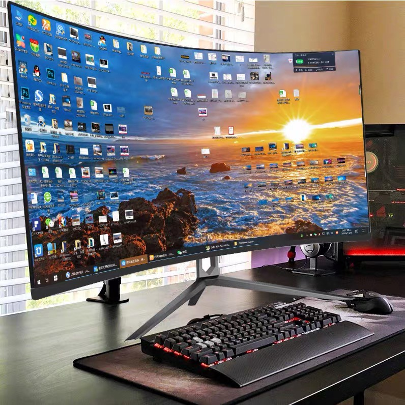

You want to invest in the best equipment you can afford for your growing business. However, its worth to consider your needs and what would serve them well. Computers are no exception. Nearly all companies rely on computers to some extent, even if its only for maintaining a web presence or corresponding with customers. In many cases, a standard desktop PC will suffice. However, upgrading to a more powerful workstation can be worth it in some scenarios. If you are unclear about the difference between a desktop computer and a workstation, keep reading.
Most people have interacted with standard desktop PCs at home or work. What is the difference between a typical desktop computer and a workstation? A workstation is a more powerful version of a desktop computer, often one thats purpose-built for a specific task rather than for general use and versatile applications. Workstations come with technical upgrades that enhance speed, security and reliability.
A desktop computer (often abbreviated desktop) is a personal computer designed for regular use at a stationary location on or near a desk (as opposed to a portable computer) due to its size and power requirements. The most common configuration has a case that houses the power supply, motherboard  (a printed circuit board with a microprocessor as the central processing unit, memory, bus, certain peripherals and other electronic components), disk storage (usually one or more hard disk drives, solid state drives, optical disc drives, and in early models a floppy disk drive); a keyboard and mouse for input; and a monitor, speakers, and, often, a printer for output.
The case may be oriented horizontally or vertically and placed either underneath, beside, or on top of a desk. Personal computers with their cases oriented vertically are referred to as towers. As the majority of cases offered since the mid-1990s are in this form factor, the term desktop (or pizza box, for compact models) has been retronymically used to refer to modern cases offered in the traditional horizontal orientation.
Thanks to Wikipedia